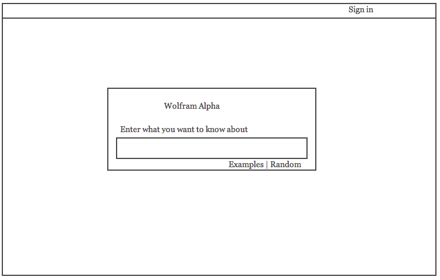

-
fivethirtyeight.com homepage
News sites have to strike a delicate balance. They want to put a lot of content on the front page to increase chances that a user at random will see something that interests him or her. If there is too much content, however, the page will look cluttered.
Fivethirtyeight does a good job of only showing a few articles on the front page, but having each one pack a punch-- the cover story on the left and the infographic on the right are usually topics of universal appeal.
duolingo.com lesson page
The lesson page is the most critical page of a teaching site. In the case of Duolingo, the page only shows one question at a time, freeing the user from distractions. There is also a clear progress bar that fills up a notch for each question answered, and resources such as "Tips and Notes" are readily available directly above the question.

wolframalpha.com homepage
Wolfram Alpha's wireframe design directs all attention to the center search bar. Outside the search box, the page is virtually all whitespace, with the only exception being a small bar along the top for sign-in. This design works well for the page because the function of the site is to calculate or compute the ouput for a provided user input.
